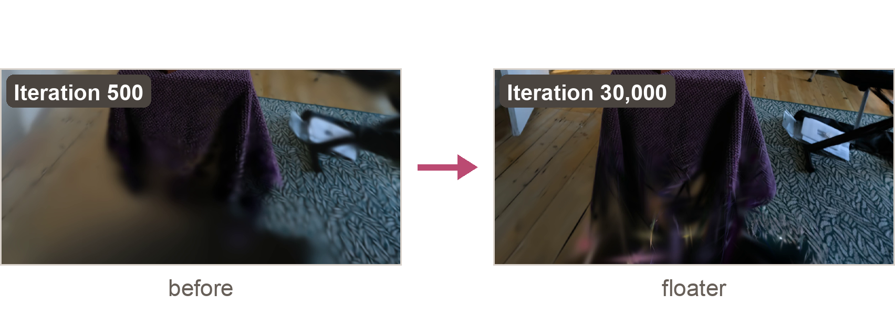
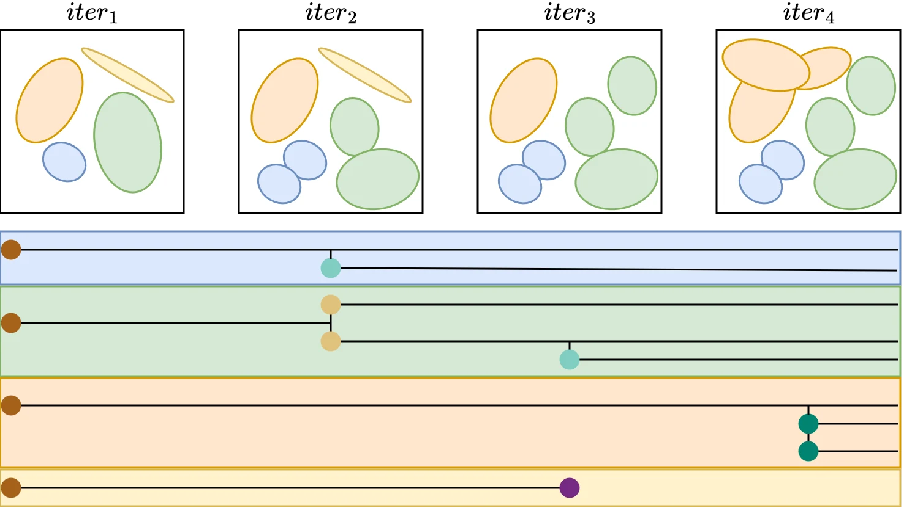

Research, everyday tools, and things built out of curiosity.
Research
Research · IEEE VIS 2026 short paper
Vis4GS
A visual analytics tool for inspecting 3D Gaussian Splatting. Linked views connect scene artifacts with Gaussian properties, training history, and densification genealogy.
A keyboard-driven terminal workspace for projects, persistent AI agent sessions, and system status. Its orbital map turns workspaces into planets and agent sessions into moons.
A course project exploring chest X-ray analysis with computer vision and AI agents. The interface shows detection overlays, generated analysis, and the dialogue between analysis and verification agents.
Explore the same view at iterations 500 and 30,000. Look at the lower center: the later reconstruction reveals dark, elongated floater artifacts.

Two recorded reconstruction outputs from my Vis4GS presentation.
↔
30,000 · revealed on the left500 · on the right
Iteration 500Iteration 30,000
Drag across the image or use the slider to compare. Use “Look closer” to inspect the lower center. The slider also works with your keyboard.
These are two recorded outputs; the divider reveals them without generating intermediate training states.
A final image shows the artifact. Vis4GS links it to individual Gaussians, their properties, and their training history. Explore the research in the paper ↗
Gaussian genealogy · Bonsai
Follow a Gaussian’s family.
This nine-node family comes from the recorded training log. Select a Gaussian to trace its parents, see when it was created, and check whether it was pruned.
Solid node: not pruned in the recorded snapshot.Dashed node: pruned.
Highlighting follows the selected node back to the root. On a small screen, scroll the tree sideways or choose a node from the menu.
The family begins with Gaussian #3125 at iteration 0. It has six clone children; one of them, #903358, has two further clone children. Enable JavaScript to inspect the tree.
A separate family from the Bonsai scene, showing clone relationships in the iteration-30,000 snapshot. This tree does not identify the Gaussians behind the floater comparison above. Download the recorded family ↗
Linked views connect a rendered scene with the history of its Gaussian primitives.
Looking past the final image.
3D reconstructions can contain blur, floaters, and needle-like artifacts. Vis4GS helps inspect the Gaussians behind those artifacts and trace their evolution during training.
The tool links scene inspection, diagnostic scores, property timelines, and densification genealogy in one visual analysis workflow.

Following Gaussian genealogy through densification.
First-authored research, accepted at IEEE VIS 2026.
I’m a first-year master’s student in ISA at National Tsing Hua University.
I work in VM Lab, advised by Dr. Shih-Hsuan Hung (Kevin). My interests are in visual analytics and tools that help researchers understand complex computational processes.
Along the way.
Started at NTHU
B.S. studies in IPTH.
Transferred to Computer Science
Continued my undergraduate studies at NTHU.
Vis4GS accepted at IEEE VIS
Our short paper on visual analytics for 3D Gaussian Splatting reconstruction.